Q1 — 訓練多久？
（例：總共 X 個月、每週 X 小時、平日 vs 假日的分配…）
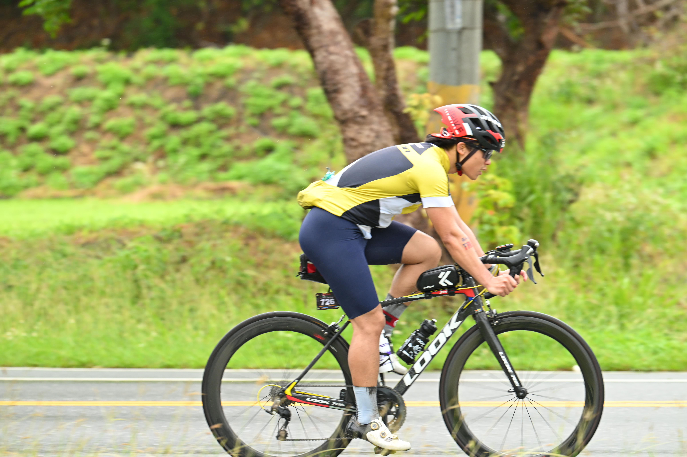
引導問題：為什麼會參加 CT226？是誰、什麼時刻觸發了你？報名按下去的當下心情如何？
（從一個具體的瞬間切入會最有畫面感。例如：某次聚餐後被誰慫恿、滑手機看到某張完賽照、體檢報告上的某個數字、某次自我懷疑的低潮……）
（建議 150–250 字、1–2 段。讓觀眾感受到「為什麼是我，為什麼是現在」。）
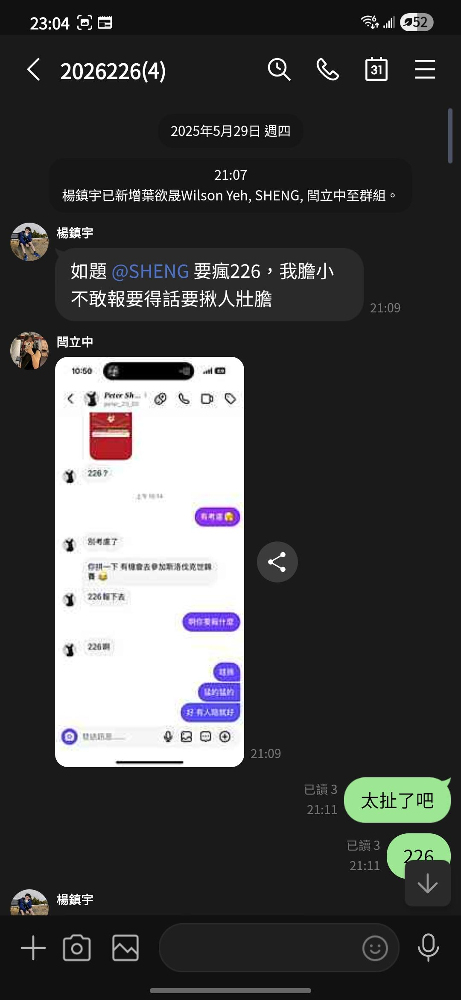
引導問題：開始訓練後，生活有什麼改變？飲食、作息、社交、心態、甚至看世界的方式？最意外的改變是什麼？
（三個方向各挑一個最有故事的講：
① 身體面 — 每週訓練時數、最累的那次、體重 / 體脂變化、突然發現自己能做到某件事；
② 生活面 — 飲食變了什麼、社交時間被擠壓、家人朋友的反應；
③ 心態面 — 對「不可能」這三個字的看法、開始相信「重複可以打敗才華」之類的內在轉變。）
（建議寫成「具體事件 + 反思」的格式，比羅列數據更打動人。）
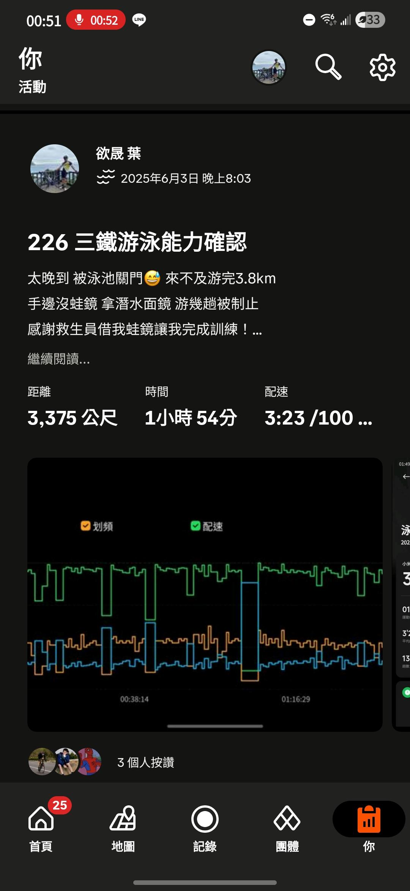
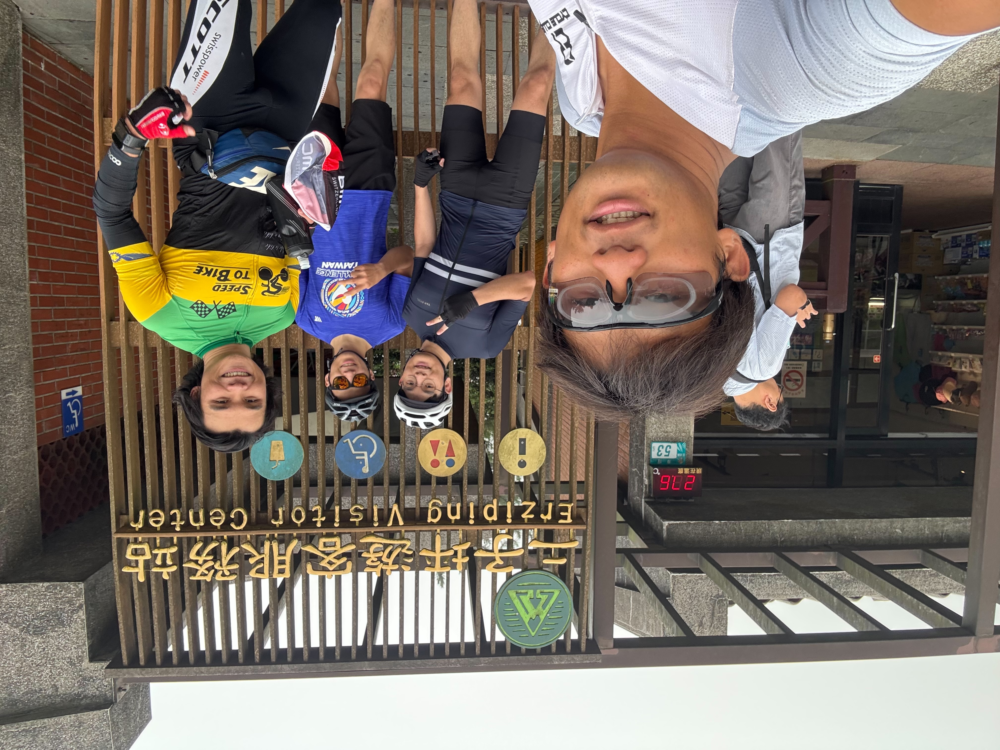
引導問題：比賽當天最痛苦的部分是什麼？身體的痛 vs 心理的痛，哪個更難對付？有沒有一個「我撐不下去了」的瞬間？
（開賽前的緊張、入水時的水溫、人群中被踢到的瞬間、抬頭看不到岸邊的崩潰感、配速怎麼掌握、有沒有想過直接喊救援……）
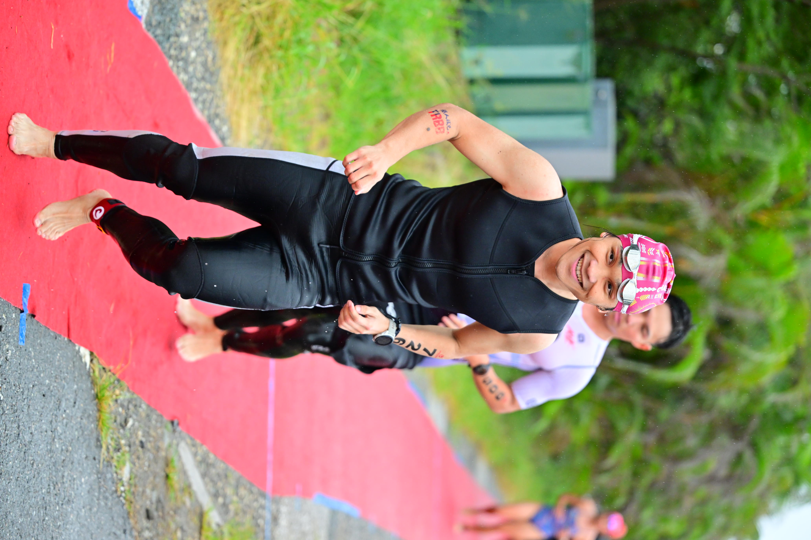
（上車的第一公里、最陡的那段坡、補給站發生什麼事、有沒有遇到爆胎或機械故障、最痛苦的那一公里在想什麼、屁股 / 腰 / 膝蓋哪裡先壞掉……）
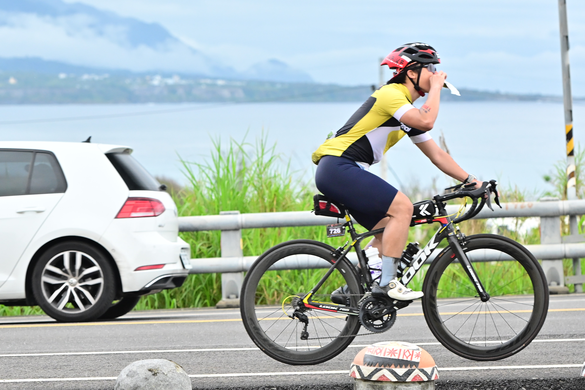
（下車後雙腿不像自己的感覺、烈日 vs 風雨、抽筋怎麼處理、有沒有走路、和路上某位選手 / 加油民眾的互動、終點越來越近的心情……）
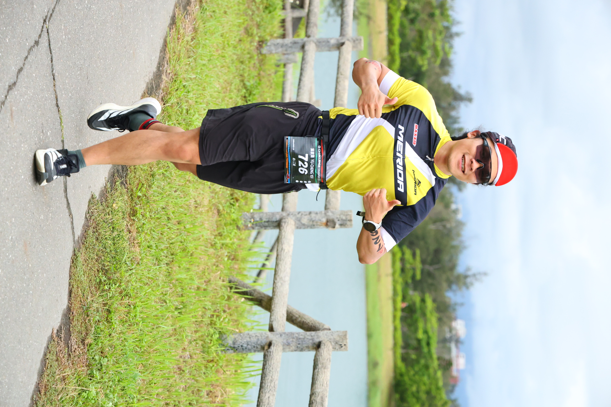
引導問題：比賽過程中腦袋在想什麼？什麼讓你撐下去？是某個人、某句話、某個畫面、某段音樂、還是純粹的不甘心？
「在這裡放一句最打動你自己的內心對白，例如：『再撐一公里就好』、『我不是來證明什麼，我是來證明我可以』。」
（這一章是整場分享的情緒核心。可以分兩個層次：
① 撐下去的「外部支點」— 家人 / 隊友 / 同事的訊息、路邊陌生加油聲、看到某個人的背影；
② 撐下去的「內在支點」— 你跟自己對話的方式、過去某段挫折經驗的回響、信仰或某種價值觀。）
（這一段不用怕「太抒情」，反而越誠實越動人。）
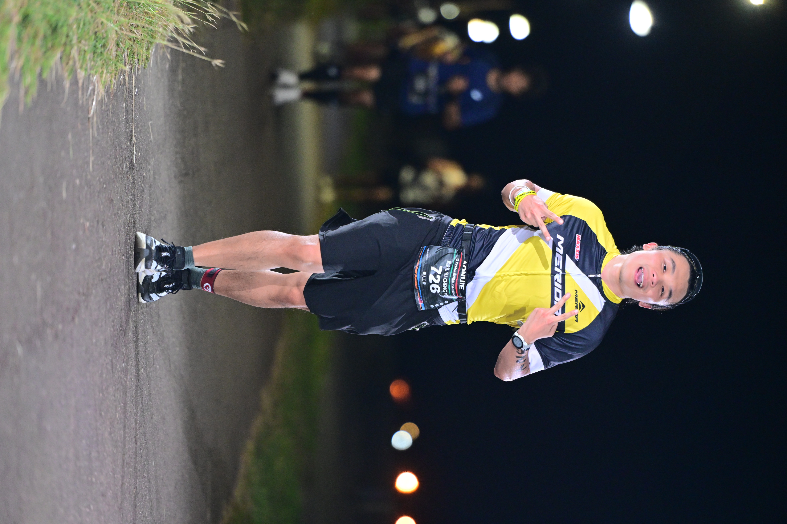
引導問題：通過終點線那一刻的感受？這場比賽帶回來的「禮物」是什麼？哪些是你以為會收穫但沒收穫、又有哪些是意外的禮物？
（試著用 5 個感官還原那一刻：聽到什麼聲音？看到誰？腿在發抖嗎？眼淚有沒有掉下來？第一個念頭是什麼？）
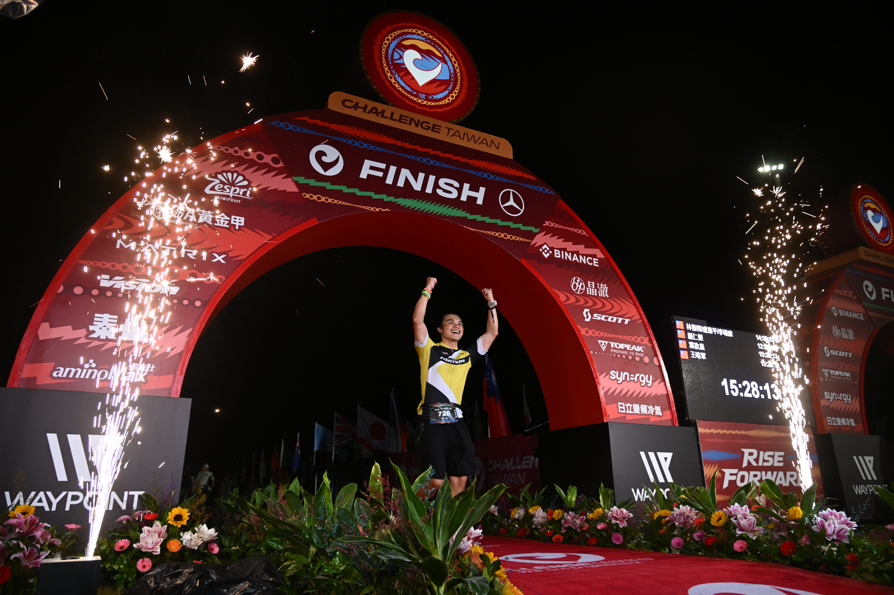
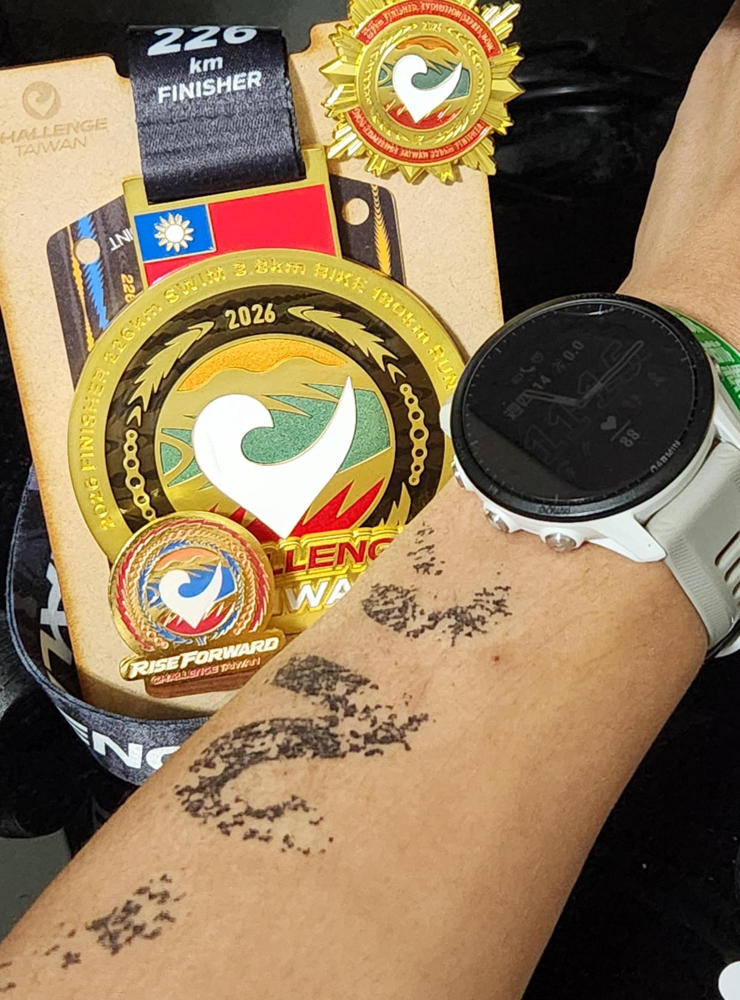
引導問題：還會想再參加嗎？如果要推薦同事一句話，會說什麼？這段旅程對工作 / 工程師生涯有什麼啟發？
（可以分兩層：
① 對個人 — 還會不會再戰？下一個目標 (大鐵 IRONMAN？馬拉松？單純維持健康？)；
② 對團隊 — 如果同事想開始，你會給什麼建議？這段經驗對你身為工程師 / 主管 / 同事的影響是什麼？）
（結尾可以丟一個 hook：例如「下個月我會再報名 OOXX」，或「歡迎來找我一起跑」，把分享自然導向 Q&A。）
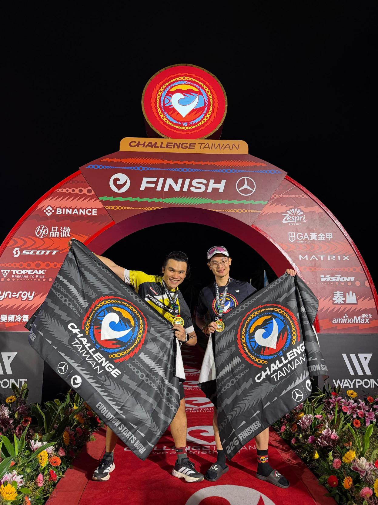
提示：列出你「希望被問到」和「最常被問到」的問題，分享現場觀眾可以從這裡挑題目。
（例：總共 X 個月、每週 X 小時、平日 vs 假日的分配…）
（裝備、報名費、住宿、營養補給的粗估）
（這題可以連結到工程師生活，最容易引起共鳴）
（誠實講，反而幫助想開始的人）
（例：賽前沒練 XX、補給沒帶夠、太早衝太快…）
（給一個具體、明天就能做的小行動）
感謝大家聽完這 10 分鐘 🙏
歡迎隨時來找我聊跑步、聊單車、聊任何想開始但還沒開始的事。